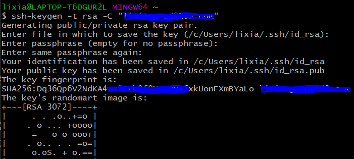
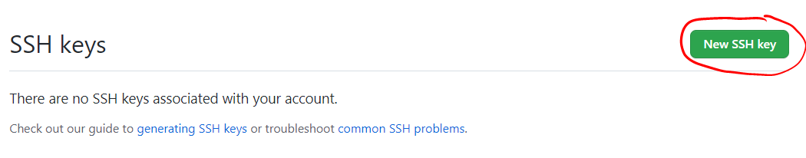
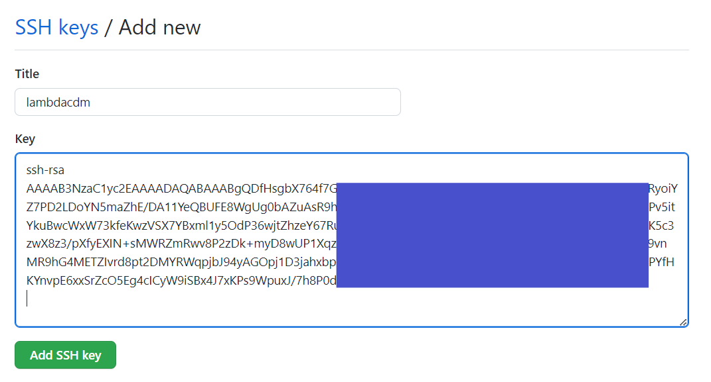
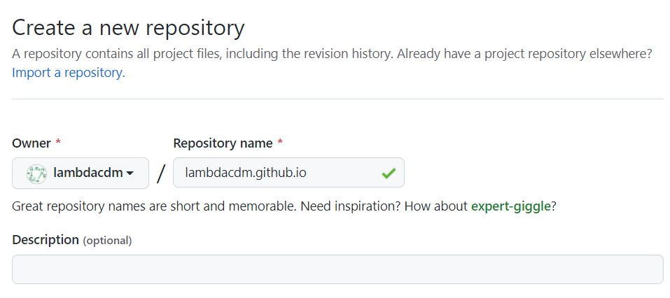
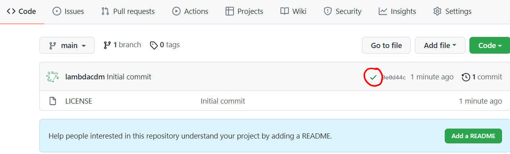
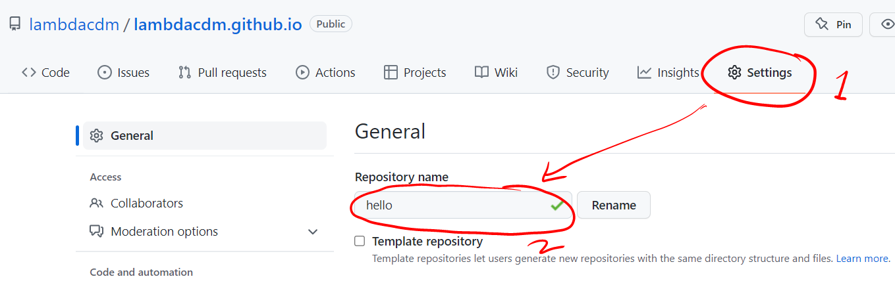
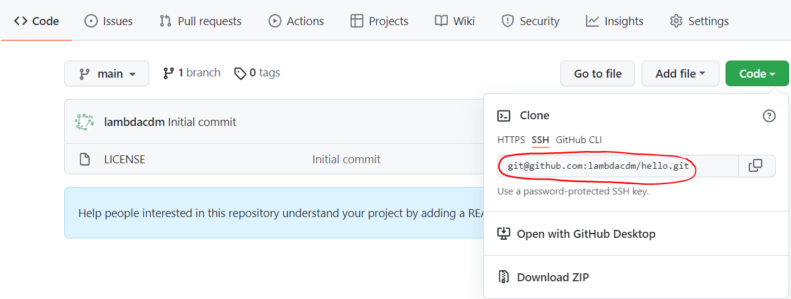
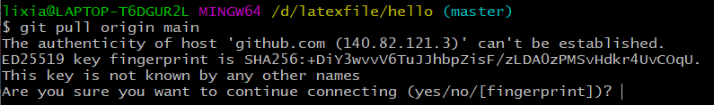
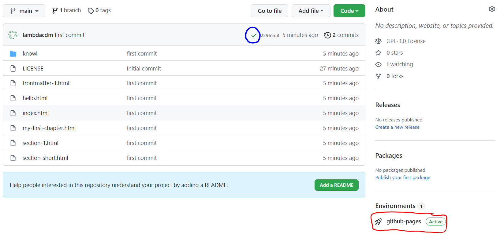
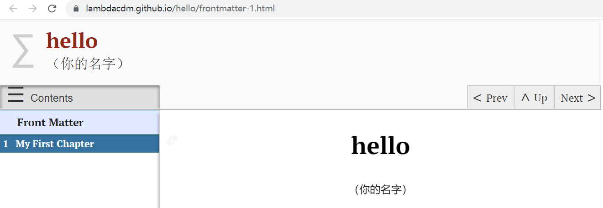

Section 1.3 上传到网站
之前我们创建并编辑了一个项目，但它此时只存在于本地中。 现在我们将它上传到网站上。这里我们用github托管网站。 下面的流程就是常见的git push。如果你对此十分熟悉，可以忽略本文。
进行下面的内容之前，先进入github网页并登录账号。
1
github.comSubsection 1.3.1 为github账号配置SSH key
如果你已经配置好SSH key，请跳过这一步。
我们需要先在git上绑定github账号。打开Git Bash。 在弹出的命令行窗口里面一行一行地运行如下代码（其中双引号里的内容自行替换）：
git config --global user.name "你的github账户名"
git config --global user.email "你github注册时的邮箱"
下面来生成SSH key。继续在窗口运行如下代码（其中双引号里的内容自行替换）：
ssh-keygen -t rsa -C "你github注册时的邮箱"
之后它会让你输入一些东西。这里我们什么都不输入，一路回车，之后如下图所示（你应该需要按三次回车）：

进入链接
https://github.com/settings/keys。 点击下图红圈处的New SSH key按钮。
然后用资源管理器打开本地目录
C:/用户/(你的电脑用户名)/.ssh， 用编辑器（如vscode）打开其下的id_rsa.pub文件，复制里面的内容（应以ssh-rsa开头）。 把这段内容粘贴到下图所示位置（其中Title名称自己定）：
点击绿色按钮Add SSH key，这样SSH key就配置好了。然后关掉Git Bash窗口。
Subsection 1.3.2 github上创建新仓库
进入链接
https://github.com/new用以创建新仓库。 在Repository name下的框中给仓库命名。 注意，必须这样命名***.github.io，其中***是你的github账号名，如下图所示 （这样能保证创建仓库的同时生成网站）：
其他选项根据自己需要确定。然后点击Create repository按钮创建仓库。 如果下图中红圈位置是绿色对勾，则说明仓库创建的同时网站也生成成功。 如果不是绿色对勾，请等待一段时间，然后刷新页面。

如果你不满意这个仓库名，此时再去到Settings里更改。 比如，我们现在把仓库名更改为
hello，如下图所示。
Subsection 1.3.3 将本地网页通过git上传到github上
在github仓库中的Code下，点击Code绿色按钮，然后点击SSH，复制下图红圈处的链接
git@****.git。
用电脑的资源管理器打开
hello下的output下的html文件夹。 右键，选Git Bash Here。在弹出的命令行窗口一行一行运行：git init
git remote add origin git@****.git
这样就初始化了本地git任务并连接到了github仓库。下面再一行一行地运行（其中双引号里的内容自行替换）：
git pull origin main
git checkout main
git add .
git commit -m "这里你自己写注释"
git push
其中第一行
git pull origin main运行后部分人可能会遇到如下提示：
yes现在回到github的仓库中，你会发现此时仓库页面变成如下图所示：

如果上图蓝圈处不是绿色的对勾，则等待一段时间后刷新网页就会变成绿色对勾。 之后点击上图红圈处github-pages，弹出的页面点击View deployment，就会打开你已经上传好的Pretext网页了，如下图所示。

把网址链接记住。这就是你这个项目的网站地址。到此为止就成功将本地的PreText项目上传到网站了。
Subsection 1.3.4 后续再次上传
如果你之后编辑了本地的PreText项目想要再次上传（相当于更新网站内容）， 只需在
hello/output/html文件夹中Git Bash Listing 1.3.8里的命令即可。